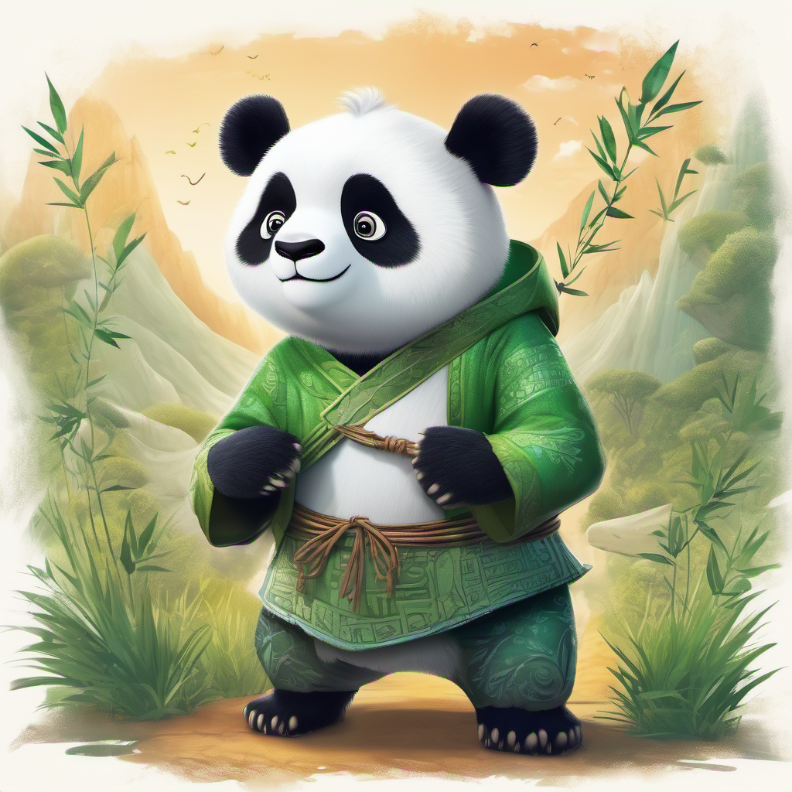

Back
Peter Sage the Panda
Peter Sage, a unique panda with silver and sage green fur, embarks on an adventurous journey beyond Bamboo Grove Valley after discovering a mysterious map. Along the way, he encounters diverse characters, learns valuable lessons about friendship, and discovers the magical Celestial Bamboo Garden. Fueled by newfound wisdom, Peter returns to his valley, sharing his tales and transforming it into a vibrant community that celebrates diversity. Peter Sage becomes a symbol of courage and inspiration for embracing one's uniqueness.
- Bamboo Trail Quest
- Peter Sage navigates through the Bamboo Grove Valley, solving puzzles and overcoming obstacles to find the legendary Celestial Bamboo Garden. Players can join him on this quest, exploring different levels of the valley and encountering various challenges inspired by nature.
- Friendship Puzzle Challenge
- In this cooperative game, Peter Sage teams up with his diverse group of animal friends to solve friendship puzzles. Each friend brings a unique skill, and players must work together to overcome challenges and strengthen the bonds between characters. The goal is to foster teamwork and unity.
- Bamboo Artistry Contest
- Peter Sage hosts a creative contest where pandas and other creatures showcase their artistic talents using colorful bamboo. Players can participate by designing their own bamboo creations, whether it's painting, sculpting, or crafting. The game promotes creativity and self-expression within the community.
These games align with the whimsical and positive spirit of Peter Sage the Panda, incorporating elements of adventure, friendship, and creativity into the gaming experience.
